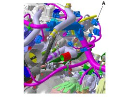
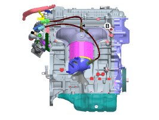
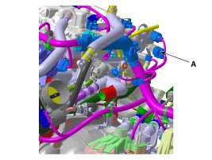
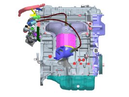
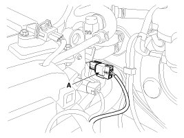
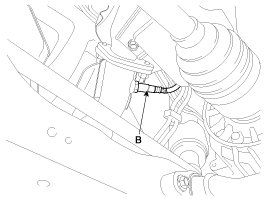
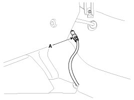
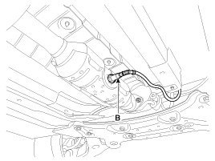

Oxygen Sensor: Service and Repair
Inspection
1. Turn the ignition switch OFF.
2. Disconnect the HO2S connector.
3. Measure resistance between the HO2S terminals 2 and 5 [B1/S1].
Measure resistance between the HO2S terminals 3 and 4 [B1/S2].
4. Check that the resistance is within the specification.
Specification:Refer to "Specification"
Removal
[SULEV]
1. Turn the ignition switch OFF and disconnect the battery negative (-) cable.
2. Disconnect the connector (A), and then remove the sensor (B).
NOTE:
Note that the SST (Part No.: 09392-2H100) is useful when removing the heated oxygen sensor.
[Bank 1 / Sensor 1]


[Bank 1 / Sensor 2]


[ULEV]
[Bank 1 / Sensor 1]
1. Turn the ignition switch OFF and disconnect the battery negative (-) cable.
2. Disconnect the connector (A), and then remove the sensor (B).
NOTE:
Note that the SST (Part No.: 09392-2H100) is useful when removing the heated oxygen sensor.


[Bank 1 / Sensor 2]
1. Turn the ignition switch OFF and disconnect the battery negative (-) cable.
2. Remove the console side cover.
3. Disconnect the connector (A), and then remove the sensor (B).
NOTE:
Note that the SST (Part No.: 09392-2H100) is useful when removing the heated oxygen sensor.


Installation
CAUTION:
- Install the component with the specified torques.
- Note that internal damage may occur when the component is dropped. In this case, use it after inspecting.
CAUTION:
- DON'T use a cleaner, spray, or grease to sensing element and connector of the sensor because oil component in them may malfunction the sensor performance.
- Sensor and its wiring may be damaged in case of contacting with the exhaust system (Exhaust Manifold, Catalytic Converter, and so on).
1. Installation is reverse of removal.
Heated oxygen sensor installation [SULEV]:
39.2 - 49.1 N.m (4.0 - 5.0 kgf.m, 28.9 - 36.2 lb-ft)
Heated oxygen sensor installation [ULEV]:
39.2 - 49.1 N.m (4.0 - 5.0 kgf.m, 28.9 - 36.2 lb-ft)